Dánsko, parkovací plochy Kodaně: bez parkovacích ploch (nahoře, modře) a s parkovacími plochami (dole, červeně)
Řez zleva (A) doprava (B), ±10 m podél ulice, 10 px = 1 m. Silné čáry = okraje vozovky, tenké = ostatní hranice, žlutá = střed řezu, * = odhad. Indeholder data fra Styrelsen for Dataforsyning og Infrastruktur, Ortofoto forår, WMTS-tjeneste.
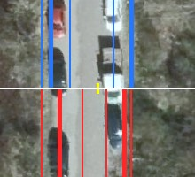
dkp-ko4 · Refshalevej (kobenhavn)bez parkovacích ploch: plocha 0.98* · parkovani 2.2* · pruh 4.94 · parkovani 2*s parkovacími plochami: plocha 1.98* · pruh 2.65 · pruh 2.65 · parkovani 2.05 · zelen 0.78* 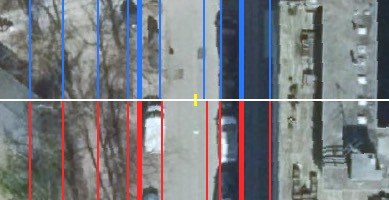
dkp-ko9 · Nordbanegade (kobenhavn)bez parkovacích ploch: stromorad 3.29* · stromorad 3.46* · stromorad 3* · chodnik 1.2* · parkovani 2* · pruh 4.5 · krajnice 1.7* · parkovani 2* · chodnik 2.9*s parkovacími plochami: stromorad 3.29* · stromorad 3.46* · stromorad 3* · chodnik 1.2* · parkovani 2.25 · pruh 4.5 · krajnice 1.3* · parkovani 2.15* · chodnik 2.9* 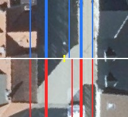
dkp-ko11 · Åbenrå (kobenhavn)bez parkovacích ploch: chodnik 2.65* · pruh 4 · parkovani 2* · chodnik 2*s parkovacími plochami: chodnik 2.65* · pruh 4.5 · krajnice 1.5* · chodnik 2* 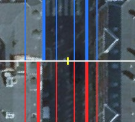
dkp-ko13 · Prinsessegade (kobenhavn)bez parkovacích ploch: chodnik 2.95* · parkovani 2.07* · pruh 2.9 · parkovani 2.03* · chodnik 1.7*s parkovacími plochami: chodnik 2.05* · parkovani 2.97 · pruh 2.9 · krajnice 2.03 · chodnik 1.7* 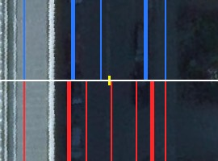
dkp-ko17 · Kaj Munks Vej (kobenhavn)bez parkovacích ploch: chodnik 6* · pruh 3.5 · pruh 5.5 · chodnik 2.5*s parkovacími plochami: chodnik 5.5* · parkovani 2.15 · pruh 3.1 · pruh 3.1 · parkovani 1.9 · chodnik 1.75* 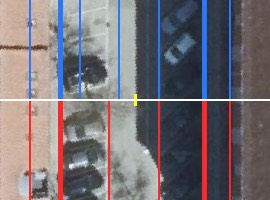
dkp-ko19 · Dannevirkegade (kobenhavn)bez parkovacích ploch: chodnik 3* · parkovani 2* · pruh 3.95 · pruh 3.92 · parkovani 4.53 · chodnik 2.65*s parkovacími plochami: chodnik 3* · pruh 4.87 · pruh 5 · parkovani 4.52 · chodnik 2.65* 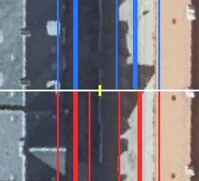
dkp-ko20 · Haregade (kobenhavn)bez parkovacích ploch: chodnik 1.85* · pruh 4.6 · parkovani 2* · chodnik 2.75*s parkovacími plochami: chodnik 1.9* · parkovani 1.55 · pruh 3.35 · parkovani 2.2 · chodnik 2.2* 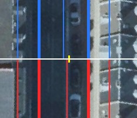
dkp-ko28 · Webersgade (kobenhavn)bez parkovacích ploch: chodnik 3.55* · pruh 4.2 · pruh 4.2 · chodnik 3.7*s parkovacími plochami: chodnik 3.55* · pruh 4.87 · parkovani 3.53* · chodnik 3.7* 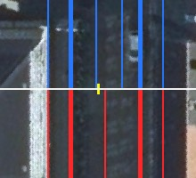
dkp-ko29 · Ny Vestergade (kobenhavn)bez parkovacích ploch: chodnik 2.5* · pruh 2.9 · pruh 2.9 · parkovani 2* · chodnik 2.65*s parkovacími plochami: chodnik 2.5* · pruh 3.9 · pruh 3.9 · chodnik 2.65* 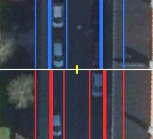
dkp-ko31 · Guldbergsgade (kobenhavn)bez parkovacích ploch: chodnik 2.02* · parkovani 2.5* · pruh 4.88 · chodnik 3.35*s parkovacími plochami: chodnik 2.25* · parkovani 1.85 · pruh 3.75 · parkovani 2.05 · chodnik 2.85* 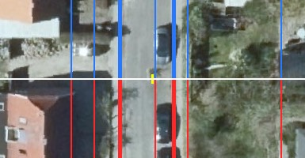
dkp-ko37 · Gærdebred (kobenhavn)bez parkovacích ploch: plocha 2.95* · zelen 3.2* · pruh 4.47 · krajnice 2.33 · chodnik 1.8* · zelen 11.75*s parkovacími plochami: plocha 2.95* · zelen 3.2* · pruh 4.47 · parkovani 2.33 · chodnik 1.8* · zelen 11.75* 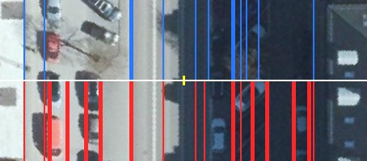
dkp-ko49 · Blegdamsvej (kobenhavn)bez parkovacích ploch: chodnik 2.5* · plocha 10.65* · pruh 4 · pruh 4 · krajnice 1.65* · parkovani 2.95 · zelen 1* · plocha 0.71* · stromorad 1.5 · plocha 6.84*s parkovacími plochami: chodnik 2.5* · plocha 0.6* · parkovani 2.2 · plocha 2.25* · parkovani 1.85 · plocha 3.75* · pruh 4 · pruh 4 · krajnice 1.15* · parkovani 3.45* · zelen 1* · plocha 1.4* · parkovani 1.8 · plocha 3.35* · parkovani 1.85 · plocha 0.65* 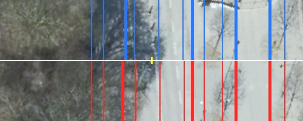
dkp-ko54 · Øster Allé (kobenhavn)bez parkovacích ploch: chodnik 2* · zelen 3.55* · krajnice 1.5* · pruh 4 · pruh 4 · krajnice 1.5* · zelen 2.02* · stromorad 3* · zelen 2.18* · obsluzna 5.6* · stromorad 2.53*s parkovacími plochami: chodnik 2* · zelen 3.05* · parkovani 2.2 · pruh 4 · pruh 4 · krajnice 1.3* · zelen 2.02* · stromorad 3* · zelen 2.18* · obsluzna 5.6* · stromorad 2.53* 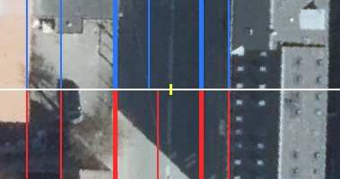
dkp-ko56 · Stengade (kobenhavn)bez parkovacích ploch: plocha 3.85* · chodnik 6* · pruh 3.8 · pruh 5.8 · chodnik 3.05*s parkovacími plochami: plocha 3.85* · chodnik 6* · pruh 4.8 · pruh 4.8 · chodnik 3.05* 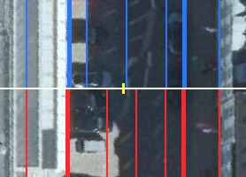
dkp-ko58 · Amaliegade (kobenhavn)bez parkovacích ploch: chodnik 4.8* · parkovani 2* · pruh 4.5 · pruh 4.5 · parkovani 2* · chodnik 3.95*s parkovacími plochami: chodnik 4.55* · parkovani 4.5 · pruh 3.32 · pruh 3.32 · parkovani 2.05 · chodnik 4* 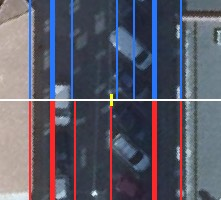
dkp-ko61 · Meinungsgade (kobenhavn)bez parkovacích ploch: chodnik 2.15* · parkovani 2* · pruh 4.5 · krajnice 1.7* · parkovani 2* · chodnik 2.7*s parkovacími plochami: chodnik 2.15* · parkovani 2.35 · pruh 3.62 · parkovani 4.23 · chodnik 2.7* 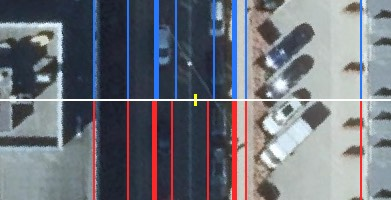
dkp-ko63 · Klerkegade (kobenhavn)bez parkovacích ploch: zelen 3.45* · chodnik 2.8* · parkovani 2* · pruh 3.8 · parkovani 2* · chodnik 1.2* · plocha 11.45*s parkovacími plochami: zelen 3.45* · chodnik 2.6* · parkovani 1.8 · pruh 3.55 · parkovani 2.65* · chodnik 1.2* · plocha 11.45* 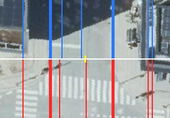
dkp-ko69 · Ny Carlsberg Vej (kobenhavn)bez parkovacích ploch: chodnik 4.55* · parkovani 2.07* · pruh 3.23 · pruh 5.3 · chodnik 6* · plocha 0.7*s parkovacími plochami: chodnik 4.55* · krajnice 1.67* · pruh 4.5 · pruh 4.43 · chodnik 6* · plocha 0.7* 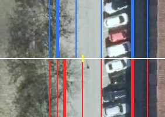
dkp-ko71 · Hans Egedes Gade (kobenhavn)bez parkovacích ploch: stromorad 1.34 · parkovani 3.16* · pruh 4.34 · parkovani 5.3 · chodnik 2.55*s parkovacími plochami: stromorad 1.34 · chodnik 1.16* · pruh 3.17 · pruh 3.17 · parkovani 5.3 · chodnik 2.55*